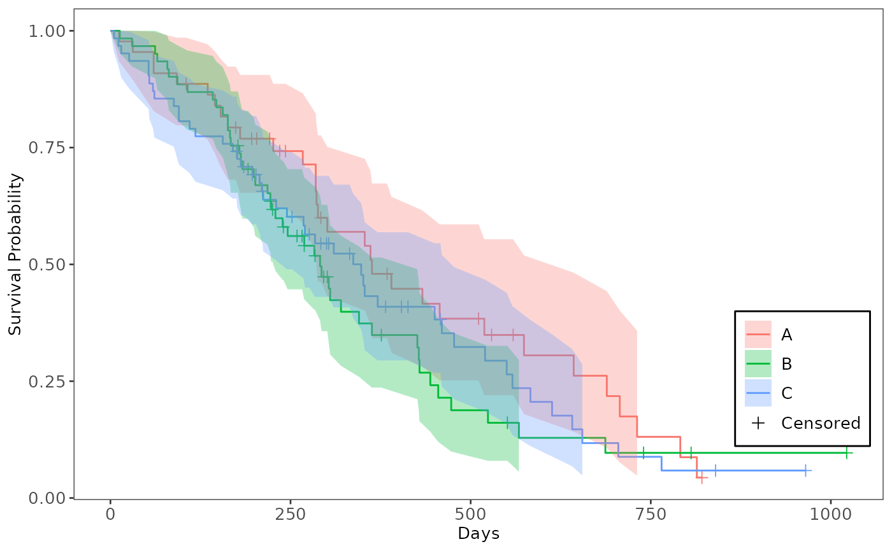
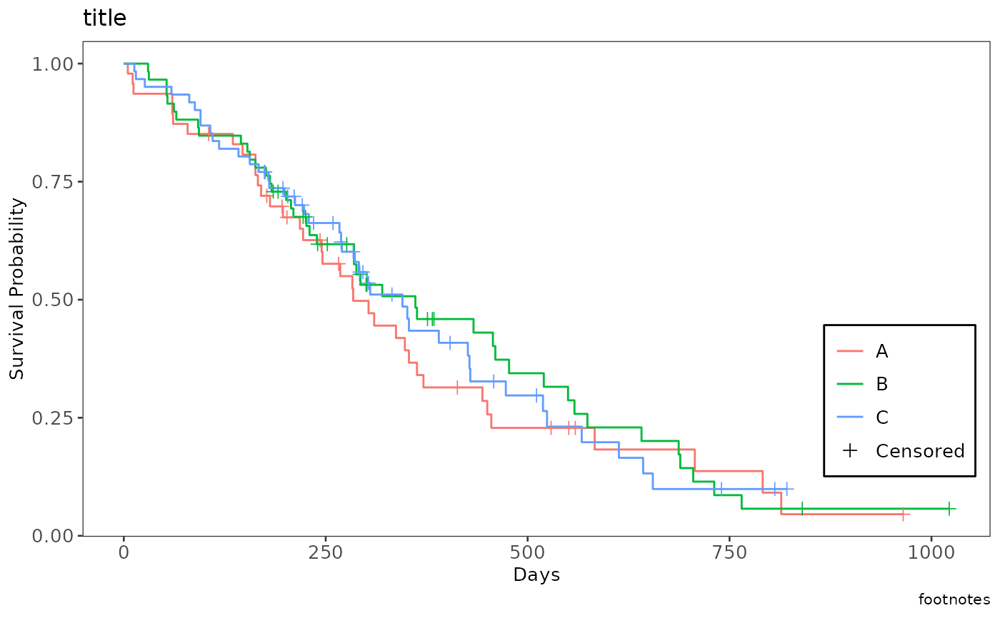

This set of functions facilitates the creation of Kaplan-Meier survival plots using ggplot2. Use
process_survfit() to prepare the survival data from a fitted survfit object, and then
gg_km() to generate the Kaplan-Meier plot with various customization options. Additional functions
like annot_surv_med(), annot_cox_ph(), and annotate_riskdf() allow for adding summary tables and
annotations to the plot.
process_survfit(fit_km, strata_levels = "All", max_time = NULL)
gg_km(
surv_plot_data,
lty = NULL,
lwd = 0.5,
censor_show = TRUE,
size = 2,
max_time = NULL,
xticks = NULL,
yval = c("Survival", "Failure"),
ylim = NULL,
font_size = 10,
legend_pos = NULL
)Arguments
- fit_km
A fitted Kaplan-Meier object of class
survfit.- strata_levels
(
string)
A single character string used as the strata level if the inputfit_kmobject has no strata (e.g.,"All").- max_time
(
numeric)
A single numeric value defining the maximum time point to display on the x-axis.- surv_plot_data
(
data.frame)
A data frame containing the pre-processed survival data, ready for plotting. This data should be equivalent to the output ofprocess_survfit.- lty
(
numericorNULL)
A numeric vector of line types (e.g.,1for solid,2for dashed) for the survival curves, orNULLforggplot2defaults. The length should match the number of arms/groups.- lwd
(
numeric)
A single numeric value specifying the line width for the survival curves.- censor_show
(
logical)
A single logical value indicating whether to display censoring marks on the plot. Defaults toTRUE.- size
(
numeric)
A single numeric value specifying the size of the censoring marks.- xticks
(
numericorNULL)
A numeric vector of explicit x-axis tick positions, or a single numeric value representing the interval between ticks, orNULLfor automaticggplot2scaling.- yval
(
character)
A single character string, either"Survival"or"Failure"to plot the corresponding probability.- ylim
(
numeric)
A numeric vector of length 2 defining the lower and upper limits of the y-axis (e.g.,c(0, 1)).- font_size
(
numeric)
A single numeric value specifying the base font size for the plot theme elements.- legend_pos
(
numericorNULL)
A numeric vector of length 2 defining the legend position as (x, y) coordinates relative to the plot area (ranging from 0 to 1), orNULLfor automatic placement.
Value
The function process_survfit returns a data frame containing the survival
curve steps, confidence intervals, and censoring info.
The function gg_km returns a ggplot2 object of the KM plot.
Details
Data setup assumes "time" is event time, "status" is event indicator (1 represents an event),
while "arm" is the treatment group.
Functions
process_survfit(): takes a fitted survival::survfit object and processes it into a data frame suitable for plotting a Kaplan-Meier curve withggplot2. Time zero is also added to the data.gg_km(): creates a Kaplan-Meier survival curve, with support for various customizations like censoring marks, Confidence Intervals (CIs), and axis control.
Examples
# Data preparation for KM plot
use_lung <- survival::lung
use_lung$arm <- factor(sample(c("A", "B", "C"), nrow(use_lung), replace = TRUE))
use_lung$status <- use_lung$status - 1 # Convert status to 0/1
use_lung <- na.omit(use_lung)
# Fit Kaplan-Meier model
formula <- survival::Surv(time, status) ~ arm
fit_kmg01 <- survival::survfit(formula, use_lung)
# Process survfit data for plotting
surv_plot_data <- process_survfit(fit_kmg01)
head(surv_plot_data)
#> # A tibble: 6 × 10
#> time n.risk n.event n.censor estimate std.error conf.high conf.low strata
#> <dbl> <dbl> <dbl> <dbl> <dbl> <dbl> <dbl> <dbl> <fct>
#> 1 0 52 0 0 1 0 1 1 A
#> 2 15 51 1 0 0.980 0.0198 1 0.943 A
#> 3 30 50 1 0 0.961 0.0283 1 0.909 A
#> 4 54 49 1 0 0.941 0.0350 1 0.879 A
#> 5 59 48 1 0 0.922 0.0409 0.998 0.851 A
#> 6 62 47 1 0 0.902 0.0462 0.987 0.824 A
#> # ℹ 1 more variable: censor <dbl>
# Example of making the KM plot
plt_kmg01 <- gg_km(surv_plot_data)
# Confidence Interval as Ribbon
plt_kmg01 +
ggplot2::geom_ribbon(alpha = 0.3, lty = 0, na.rm = TRUE)

# Adding Title and Footnotes
plt_kmg01 +
ggplot2::labs(title = "title", caption = "footnotes")

# Changing xlab and ylab
plt_kmg01 +
ggplot2::xlab("Another Day") +
ggplot2::ylab("THE Survival Probability")